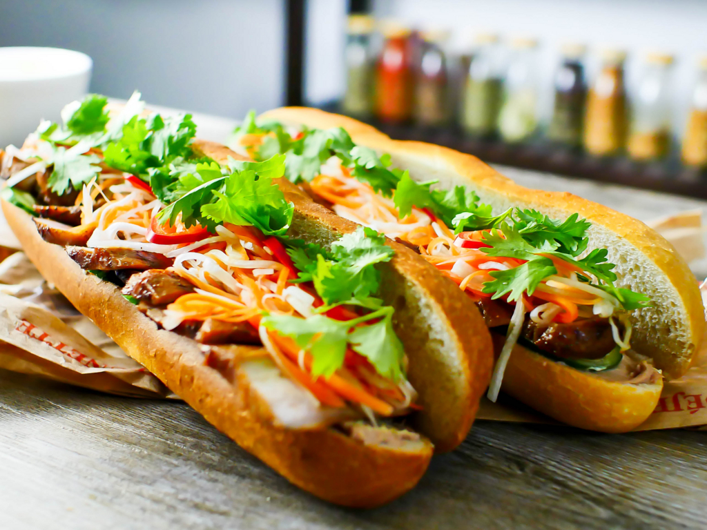
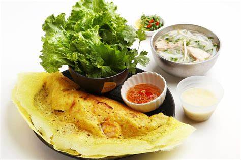

バインミー
そもそもバインミーってどんな料理？
バインミーとは、ベトナムではパンという意味。柔らかめの小さなフランスパンに具を挟んだサンドイッチのこと。
ベトナムでは一般的にパンにレバーペーストを塗って、チャーシューやパテ、ダイコンやニンジン（甘酢漬けのなます）、レタス、きゅうりなどの野菜、そしてパクチー、ミントなんかを挟んで大きな口を開けて、そのまんまがぶり！と、いきます。

バインセオサイゴン
ベトナムを紹介したWEBサイトやガイドブックにはバインセオ（Banh Xeo）はベトナム風お好み焼きであると書いていますが、それは間違いです。広島風お好み焼きのように薄皮を鉄鍋にひいて具を入れるところまでは同じですが、形は似ていても食感や味は全く異なります。英語ではベトナム風クレープと呼んでいますが、それも誤り。クレープのようにしっとりしていません。バインセオはパリパリとした皮の食感を楽しむベトナム料理です。